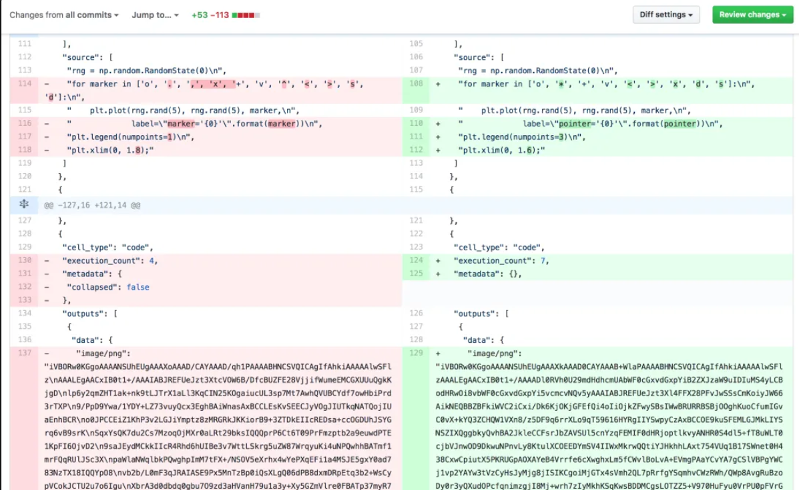

Reports with Jupyter Notebooks#
In the context of data science and quantitative finance, the use of Jupyter Notebooks for creating reports can be useful. These reports often combine code, its output, and rich text elements, like Markdown, enabling a form of literate programming.
What is Literate Programming?#
Literate programming, a concept introduced by Donald Knuth, is a programming paradigm where the main focus is on explaining the logic and thought process behind the code in a natural language, intertwined with snippets of code. This approach contrasts with traditional code-centric programming, where comments are added to code written primarily for execution by a computer. In literate programming, the emphasis is on human understanding, making it an excellent tool for education and documentation.
Jupyter Notebooks and Markdown#
Jupyter Notebooks are an open-source web application that allows you to create and share documents that contain live code, equations, visualizations, and narrative text. They are ideal for literate programming, especially in data science and quantitative finance, due to their interactive nature and ability to combine code with rich text formatted using Markdown.
Markdown in Jupyter Notebooks#
Markdown is a lightweight markup language with plain-text formatting syntax that can be converted to HTML or other formats. It is used in Jupyter Notebooks to create formatted text including headers, lists, emphasis, links, blockquotes, and embedded images.
Creating a Report in Jupyter Notebook#
Starting a New Notebook: Open Jupyter Notebook and start a new notebook with a Python kernel.
Writing Markdown Cells:
To add a Markdown cell, select a cell, and change its type to ‘Markdown’ from the dropdown menu.
Write your content using Markdown syntax. For example:
# Main Title ## Subtitle Here's some *italicized text*, and here's some **bold text**. - Bullet point 1 - Bullet point 2
Adding Code Cells:
Code cells are the default cell type.
Write Python code in these cells. For example:
print("Hello, World!")
Executing Cells: Press
Shift + Enterto execute a cell and move to the next one.Including Mathematical Notations:
Jupyter supports LaTeX for rendering mathematical notations.
Enclose LaTeX commands in dollar signs (
$) for inline equations or double dollar signs ($$) for displayed equations. For example:Inline equation: $E = mc^2$ Displayed equation: $$ a^2 + b^2 = c^2 $$
Embedding Images and Graphs:
For external images, use Markdown syntax:
For images generated by code (e.g., plots from
matplotlib), simply execute the code in a code cell, and the output will be displayed in the notebook.
Combining Elements:
Integrate explanations in Markdown with code cells to create a cohesive and interactive report.
Exporting the Notebook:
Jupyter Notebooks can be exported to various formats including HTML, PDF, and Markdown via the ‘File’ > ‘Download as’ option.
Discussion
Make sure to try this for yourself. Add some markdown cells and then export to an HTML file or PDF.
What are the downsides of using Jupyter Notebooks?#
Not everyone in the computer science world is fully on-board with Jupyter notebooks. It has its drawbacks and some say that it encourages bad practices. See here for one opinion: The Five Worst Things About Jupyter Notebooks
It is almost impossible to practice good code versioning
The non-linear workflow of jupyter - It’s best and worst part
Jupyter is bad for running long asynchronous tasks
Jupyter can be slow
No IDE integration
One more thing
It’s often important to consider where computations are run. For code that’s easy to put into Docker, deploying to a cloud solution is easy. For notebooks, there are also good options, though you’re more locked into specific solutions.
Git Diffs of Jupyter Notebooks#

There are tools like nbdime or even VS Code provides some help with this issue, but it adds a lot of extra tooling that can be combersome and difficult for new users.
My Solutions for Incorporating Jupyter Notebooks into Git and an Automated Pipeline#
See the dodo.py file of my blank_project Git Repo: jmbejara/blank_project